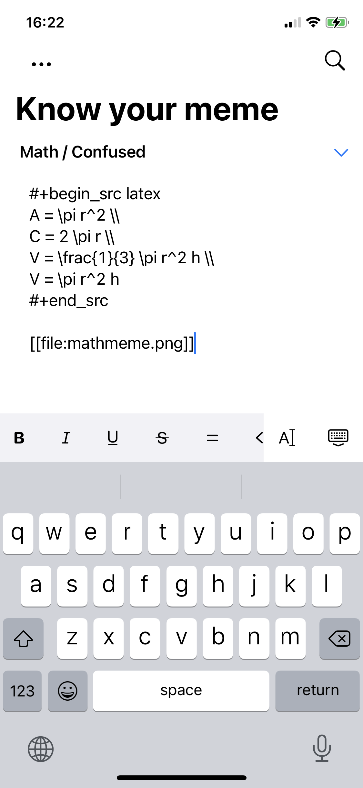

Álvaro Ramírez
Plain Org v1.2 released
Although Plain Org v1.2 has been in the App Store for a little while, the release write-up was overdue, sorry. The update receives some new features and bugfixes.
If you haven't heard of Plain Org, it gives ya access to your org files on iOS while away from your beloved Emacs.
If you're finding Plain Org useful, please help support this effort by getting the word out. Tell your friends, tweet, or blog about it.
Ok, now on to what's included in the v1.2 release…
Edit heading sections inline
v1.0 introduced outline editing (for headings only). In v1.2, we can also edit section content. Press the return
key multiple times to exit out section editing.

Filter by keyword/priority/tag
From the search dialog, you can now filter by keyboard, priority, and tag.


Render drawers and properties
Drawers are now rendered and can be expanded to view their content.

Open files via the Files app's "Share" sheet
From the Files app, you can now explicitly request launching files in Plain Org by using the "Share" menu.

Render LaTeX src blocks (experimental)
This one has its rough edges at the moment, so have to mark it experimental, but… you can can now render #+begin_src latex blocks.


Insert title/id in new files
New files created via Plain Org automatically get #+TITLE: and :ID: inserted by default as follows:
#+TITLE: My favorite title :PROPERTIES: :ID: 7C845D38-8D80-41B5-BEB1-94F673807355 :END:
UPDATE: Sorry, this feature currently has a bug. You may not get these values inserted into your new document. Working on a fix.
Adding new tags quicker
Add tags quicker via the new + button.

Enable/disable sticky tags
Keywords, indent, and tags are maintained when adding new headings via outline editing. If you prefer disabling sticky tags, this can now be disabled.

Improved navigation bar
v1.2 makes the navigation bar feel more at home on your iPhone. It uses a large title which scrolls into the navigation bar.

Bugfixes
- Fix table rendering for iPad width.
- Fix image's horizontal padding.
- Fix adding new tags on new headings.
- Fix snapshotting bug resulting in Syncthing conflicts.
- Fix tapping menu after presenting other dialogs.
- Filter out parenthesis in file-local keywords like
TODO(t). - Commit pending inline changes if search is requested.
- Fix opening local links inside tables.
- Roundtrip whitespace in empty headings.
- Roundtrip trailing whitespace when raw-editing heading content.
- Tapping on body content should not toggle expansion.